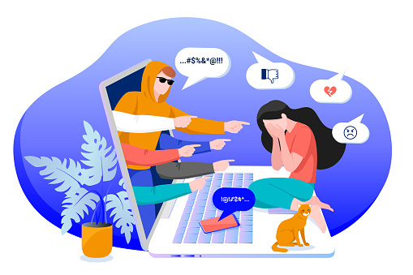

Kajian Teori
Pengertian:
Cyberbullying (perundungan dunia maya) ialah bullying/perundungan dengan menggunakan teknologi digital. Hal ini dapat terjadi di media sosial, platform chatting, platform bermain game, dan ponsel. Adapun menurut
Think Before Text, cyberbullying adalah perilaku agresif dan bertujuan yang dilakukan suatu kelompok atau individu, menggunakan media elektronik, secara berulang-ulang dari waktu ke waktu, terhadap seseorang yang dianggap tidak mudah melakukan perlawanan atas tindakan tersebut.
Website merupakan fasilitas internet yang menghubungkan dokumen dalam lingkup lokal mauun jarak jauh. Dokumen dalam website disebut dengan webpage dan link dalam website dapat digunakan oleh pengguna untuk beralih dari satu halaman ke halaman (hyertext) lain baik antar halam yang disimpan di server yang sama maupun dalam server yang ada di seluruh dunia. Halaman (page) dapat di akses atau di baca melalui browser seperti Google Chrome, Mozilla Firefox dan lain sebagainya.contoh manfaat website :
-Menjadi media untuk berbagi wawasan
-Menjadi sumber informasi
-Mengakses layanan publik
-Menggalang aksi sosial
Coding adalah salah satu tindakan dari langkah-langkah pemrograman dengan menuliskan kode atau skrip dalam bahasa pemrograman. Supaya skrip tersebut dapat dipahami oleh komputer, maka saat proses coding kamu harus mengikuti aturan sintaks yang berlaku. Aturan sintaks sangat tergantung dari bahasa pemrograman apa yang kamu gunakan saat menuliskan skrip.Dengan kata lain coding merupakan kegiatan yang dimana kamu memberitahukan komputer apa yang harus dia kerjakan untuk kamu. Sebuah kode yang ada pada skrip bisa diibaratkan layaknya bahasa sehari-hari. Setiap kode yang kamu tulis akan membantu komputer untuk mengetahui dan memahami apa yang ingin kamu lakukan pada komputer. Komputer akan menerima perintah ini dan komputer akan melakukan operasi berdasarkan perintah yang kamu tuliskan. Manfaat coding adalah :
-Menciptakan inovasi baru
-Berbagi dan belajar bersama
-Memecahkan masalah
A.contoh
Cyber bullying banyak jenisnya, diantaranya :
1.menyebarkan kebohongan tentang seseorang
2.mengirim pesan atau ancaman yang menyakitkan
3.mengomentari postingan yang korban buat dengan kata-kata yang tidak pantas
4.membuat postingan untuk menyindir seseorang
B.Dampak
Cyber bullying banyak menyebabkan dampak pada seseorang, diantara nya:
1.merusak psikologis seperti mudah marah, cemas, dan gelisah
2.menarik diri dari lingkungan sosial
3.mengurang nya rasa percaya diri
4.lebih agresif pada teman atau keluarga
5.dapat menimbulkan percobaan bunuh diri
C.cara mengatasi
Banyak cara untuk mengatasi Cyber bullying, diantara nya:
1.kurangi penggunaan sosial media
2.batasi komentar pada setiap postingan
3.batasi dalam memosting di sosial media
4.jangan mudah terpancing
5.saring sebelum sharing
D.Penelitian yang relevan
Penelitian terdahu melakukan penelitian, kemudian dapat memperkaya teori dalam mengkaji penelitian yang akan dilakukan nantinya. Akan tetapi saya akan mengangkat beberapa penelitian sebagai referensi dalam memperkaya kajian pada
penelitian ini.
Pertama, Penelitian yang dilakukan oleh Mira Herlina dan Safarudin Husada yang telah melakukan penelitian terkait sebelumnya pada tahun 2019 yang berjudul Dampak Kejahatan Cyber dan Informasi Hoax Terhadap Kecemasan Remaja di Media Online.
Hasil penelitian menunjukkan bahwa Cybercrime memiliki pengaruh yang besar terhadap kecemasan, sehingga hipotesis bisa diterima yaitu pengaruh media online terhadap kecemasan remaja adalah Cybercrime. Selain itu, pengaruh pesan nakal tentang kecemasan remaja di media online masih lemah. Dengan cara ini, kami menerima hipotesis bahwa pada kategori media online yang kurang beruntung, pesan prank berdampak pada kecemasan remaja.
Ke-dua, Penelitian yang dilakukan oleh Krisman Nazara yang ditulis pada tahun 2019 yang berjudul Analisis Perilaku Cyberbullying Remaja Di Jejaring Sosial Instagram Di Sekolah Madrasah Aliyah Islamiyah Sunggal.
Hasil penelitian adalah bentuk-bentuk perilaku Cyberbullying yang paling sering dilakukan oleh remaja pengguna Instagram adalah flaming, body shaming, dan pelecehan. Pelaku dan korban bisa datang dari berbagai kalangan. Namun, remaja sebagai pengguna terbesar jejaring sosial ini menjadi korban dari dampak penggunaan media sosial. Kepribadian yang tidak stabil, kurangnya kemampuan untuk memilah dan memilih berita, serta kurangnya pengetahuan tentang dampak buruk dari internet dan Cyber bullying membuat remaja sangat rentan terhadap hal ini. Remaja melakukan Cyber bullying karena emosi yang belum stabil membuat mereka melakukan hal tersebut tanpa memperdulikan dampak yang terjadi pada korban.
Ke-tiga, Penelitian yang dilakukan oleh Yana Choria Utami yang ditulis pada tahun 2013 yang berjudul Cyberbullying di Kalangan Remaja (Studi tentang Korban Cyberbullying di Kalangan Remaja di Surabaya).
Hasil penelitian ini adalah Masalah Cyber bullying ini bisa muncul karena meningkatnya para pengguna internet dan munculnya social media yang sering jelajahi oleh pelajar. Mengakses dunia Cyber merupakan kebiasaan (habit) yang dilakukan siswa selain belajar. Informasi, atau pengetahuan di dunia teknologi informasi,dan skill mereka sudah di atas rata-rata dari para korban, sehingga mereka dengan gampang membobol akun, Ada bentukbentuk Cyber bullying yang diterima, mulai dari Facebook diretas hingga diolok-olok atau dihina di media sosial. Bentuk-bentuk Cyber bullying adalah
Cyber bullying serangan langsung dan Cyber bullying dengan proxy. Bentuk Cyberbullying di sini berupa tulisan yang ditujukan langsung kepada korban, bisa melalui direct message atau timeline di Facebook atau Twitter. Cyber bullying dengan proxy. Bentuk Cyberbullying ini berbeda dengan yang pertama dalam bentuk ini akun seseorang bisa diambil alih dan semua informasi dapat diubah tanpa izin dari pemilik akun.
Ke-empat,Penelitian yang dilakukan oleh Rian Dioza yang ditulis pada tahun
2019 yang berjudul Kebijakan Kriminal Penanganan Cybercrime Pada Satuan Reserse Kriminal Polres Aceh Tenggara.
Hasil penelitian ini adalah Kebijakan kriminal Cybercrime dalam sudut pandang sistem peradilan pidana Indonesia, karena kurangnya fasilitas infrastruktur, seseorang tidak dapat berbicara tentang deteksi kejahatan dunia maya yang mapan dan independen, bahkan dengan faktor penghambat baik penal maupun non penal.
Penegakan hukum terhadap Cybercrime yang dilaksanakan oleh Satuan Reserse Kriminal Polres Aceh Tenggara dikala ini ada kendala kendala teknis yang menyebabKan kurang bisa terlaksananya kepastian hukum terkait kasus kejahatan Cybercrime antara lain minimnya koordinasi secara terstruktur serta tersalur, dan uraian tentang pengaplikasian terhadap "
Undang-Undang No 19 Tahun 2016"
Tentang Pergantian Atas
"Undang-Undang No 11 Tahun 2008" Tentang ITE baik dari lembaga Kepolisian Resor Aceh Tenggara spesialnya pada Satuan Reserse Kriminal Unit Tipidter ataupun lembaga KOMINFO, sehingga penindakan tersebut berjalan lamban.
Penutupan
Demikian yang dapat kami jelaskan tentang perilaku cyber bullying pada remaja semoga penjelasan ini dapat bermanfaat bagi kita semua sehingga menjadi ilmu yang berguna bagi banyak orang, terimakasih kami ucapkan kepada semua pihak yang terlibat pada penelitian ini. dan sampai jumpa.